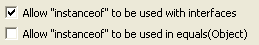

Summary
Placing an anonymous class inside a loop can decrease performance.
Description
Placing the creation of an instance of an anonymous class inside a loop will create a new instance each time the loop body is executed. Because the state of the object cannot depend on the state of any variables that change within the loop, a single object can usually be created outside the loop, increasing performance.
Example
In the following code:
EventGenerator[] generators;
for (int i = 0; i < generators.length; i++) {
generators[i].addListener(new Listener() {
public void eventGenerated()
{
...
}
}
}
The creation of the listener could, and should, be moved outside the loop because a single listener could easily be shared by all of the event generators.
Summary
Appending strings with single characters to buffers or streams is slower than appending just the single character.
Description
This audit rule finds single character string literals as a single argument to a method invocation where that argument can be replaced by a character literal to improve performance.
Example
Given the following declaration:
StringBuffer sb = new StringBuffer();
The statement
sb.append("a");
would be flagged as needing to be replaced by the statement
sb.append('a');
Summary
Avoid instantiating classes in loops.
Description
Instantiation of a class requires memory allocation. If a class is instantiated within a loop, memory allocation will be performed over and over again. If the objects are kept, this will eat up memory; if they are abandoned, it will cause excessive garbage collection.
However, this rule allows instantiation in return statements and throw statements, since they will not be repeated. It also allows instantiation in catch blocks, since these should not be reached regularly.
Example
The following would be flagged as a violation:
while (a < b) {
String s = new String();
}
Summary
Avoid instantiating an object just to call getClass().
Description
It is unnecessary to create a new instance of a class just to call its getClass() method. The public member class can be accessed without instantiation.
Example
The following would be flagged as a violation, since Object.class would be more efficient:
new Object().getClass();
Summary
Avoid using the no-argument String constructor.
Description
The no-argument String constructor new String(), creates a String that will not be functionally different from the empty String (""). Since Java guarantees that identical String constants will all be the same instance, you can improve performance by using the empty String instead.
Example
The following would be flagged as a violation:
String foo = new String();
This could be replaced with the following, which would conserve memory:
String foo = "";
Summary
Use polymorphism instead of instanceof (except when used with interfaces).
Description
This audit rule looks for uses of "instanceof". In general, one should use polymorphism instead of instanceof. Optionally, require that "instanceof" only be used on interfaces.
Example
The following uses of the instanceof operator would be flagged as violations:
if (employee instanceof AccountingEmployee) {
return "Accounting";
} else if (employee instanceof DevelopmentEmployee) {
return "Development";
...

Summary
Be careful when and how you use the equals() and hashCode() methods of the URL class.
Description
Both the equals() and hashCode() methods of the URL class resolve the domain name using the Internet. This operation can cause unexpected performance problems. Also, the hashCode() method takes the resolved IP address into account when generating the hash code. This can cause serious problems since many web sites use dynamic DNS. It is possible to store a URL in a hashed collection, and later be unable to retrieve it if the URL resolves to a different IP address.
Because of these implementation problems, it is a good idea to convert URLs to URIs before storing them in collections, or using their equals() or hashCode() methods. This can be done easily using URL's toURI() method, and reversed using URI's toURL() method.
This rule finds places where equals() or hashCode() are explicitly invoked on URL objects and places where URL objects are used in hashed Collections classes.
Example
The following would be flagged as a violation:
URL aUrl = new URL("http://address.com");
Set aSet = new HashSet();
aSet.add(aUrl);
Summary
Don't use the Class getName() method.
Description
Don't use the Class getName() method to compare classes.
Example
The following invocation of getName() would be flagged as a violation:
if (object.getClass().getName().equals("java.util.ArrayList")) {
Summary
The argument to methods that append to buffers and streams.
Description
This audit rule finds places where the argument to a method that appends to a buffer or stream is the result of a concatenation. In such cases, a separate StringBuffer is being allocated to implement the concatenation, resulting an unnecessary overhead. The items that are being concatenated should be appended separately.
Example
The following invocation of the append method would be flagged as a violation:
buffer.append("Hello " + userName + "!");
Summary
Debugging and profiling code should not be left in production code.
Description
This audit rule finds places in the code where text is being written to either System.out or System.err, or where the methods Throwable.printStackTrace(), Thread.dumpStack(), Runtime.freeMemory(), Runtime.totalMemory(), Runtime.traceMethodCalls() or Runtime.traceInstructions() are being invoked.
Example try {
...
} catch (Exception exception) {
System.err.println("Unexpected exception:");
exception.printStackTrace();
}
Summary
Define an initial capacity for ArrayList, HashMap, HashSet, Hashtable, StringBuffer, StringBuilder, WeakHashMap, or Vector instances.
Description
This audit rule requires an initial capacity to be specified when creating instances of ArrayList, HashMap, HashSet, Hashtable, StringBuffer, StringBuilder, WeakHashMap, or Vector. Array capacity expansion involves allocating a larger array and copying the contents of the old array to a new one. The old array object eventually gets reclaimed by the garbage collector. Array expansion is an expensive operation which should be avoided where possible. If you are able to approximate the expected size, you should use this value instead of the default.
Example
The following instance creation would be flagged as a violation because the expected size of the collection is not specified:
new ArrayList();
Summary
Define the load factor when creating instances of the classes 'HashMap', 'HashSet', 'Hashtable', and 'WeakHashMap'.
Description
This audit rule requires a load factor to be specified when creating instances of the classes 'HashMap', 'HashSet', 'Hashtable', and 'WeakHashMap'. The load factor impacts both the size of the collection and how long it will take to perform a look-up.
Example
The following instance creation would be flagged as a violation because the load factor is not specified:
new HashMap(42);
Summary
Detect multiple iterations over a single collection.
Description
A single method that contains multiple loops that iterate over the contents of a single collection may be improved by rewriting it. If it is possible to use a single loop then the loop maintenance overhead can be eliminated.
Example
The second for loop would be flagged as a violation:
for (int i = 0; i < array.length; i++) {
...
}
...
for (int i = 0; i < array.length; i++) {
...
}
Summary
Finalizable objects should not be instantiated.
Description
This audit rule checks for instance creation expressions in which the object being created implements the finalize() method. Finalization is expensive and error prone, so finalizable objects should not be used.
Example
If the class ResourceHandle defines the finalize method, then the following instance creation expression would be flagged as a violation:
ResourceHandle handle = new ResourceHandle(resourceId);
Summary
Don't use concatenation to convert to String.
Description
Concatenation with the empty string should never be used to convert something to a string. It is more efficient to use String.valueOf() to convert primitives, or toString() to convert objects.
Example
The following would be flagged as a violation:
count = 5; return count + "";
Summary
Some expressions are more efficient than others.
Description
This rule finds expressions that can be replaced with other equivalent and more efficient expressions.
Example
The expression
(new Integer("1234")).intValue()
should be replaced by
Integer.parseInt("1234")
because the latter expression does not create an intermediate Integer object and thus is more efficient.
Summary
The method equals("") should not be used to determine if a String is empty.
Description
This audit rule detects instances where Strings are detected to be empty with the <String>.equals("") method. Instances of "".equals(<String>) are also flagged as violations.
Example
The following would be flagged:
String str = ...;
if(str.equals("")) {
...
}
Summary
Arrays should be indexed with int values.
Description
Arrays should be indexed with int values in order to avoid the run-time overhead of converting a shorter type.
Example
The array index expression in the following code would be flagged as a violation because the loop variable "b" should be declared to be an int:
for (byte b = 0; b < 128; b++) {
array[b] = null;
}
Summary
Passing a zero-length array to toArray() is inefficient.
Description
When converting a Collection to an array using toArray(), it is most efficient to pass in an array whose length is equal to the Collection's size. This rule flags locations an array of some fixed length is passed in.
Example
The use of toArray in the following code would be flagged:
ArrayList foo = new ArrayList();
foo.toArray(new String[0]);
Summary
Don't invoke a synchronized method within a loop.
Description
This audit rule looks for invocations of methods that have been marked as being "synchronized" that occur within a loop. Synchronization is relatively expensive, so such calls should be made outside the loop if possible.
Example
Given a method defined as follows:
public synchronized void recomputeCaches()
{
...
}
The following invocation would be flagged as an error:
public void repeatedlyInvokeIt()
{
for (int i = 0; i < 10; i++) {
recomputeCaches();
}
}
Summary
Switch statements should not have more than 256 case clauses.
Description
This audit rule looks for switch statements that have more than 256 case clauses. Some processors have special support for switch statements and some JITs will take advantage of such instructions when there are few enough cases.
Example
If a switch statement with more than 256 case clauses is found, it will be flagged as a violation.
Summary
Methods should not be invoked in a loop condition.
Description
This audit rule looks for places where a method is invoked as part of a loop condition. Unless the method returns a different value each time it is called, placing the method invocation in the loop condition will force it to be executed at least as many times as the loop body. You can often improve the performance of your code by moving the invocation before the loop.
Example
The invocation of the method size() would be flagged as a violation in the following loop:
for (int i = 0; i < list.size(); i++) {
...
}
Summary
Do not multiply or divide by powers of 2.
Description
This audit rule checks for multiplication or division by powers of 2. "*" and "/" are an expensive operations. The shift operator is faster and more efficient.
Example
The following expression would be flagged as a violation:
list.size() * 2;
Summary
Invoking one synchronized method of an object from another synchronized method of the same object affects the performance of an application.
Description
This audit rule looks for invocations of a synchronized method from another synchronized method in the same class.
Security Implications
Such calls both affect the performance of an application and indicate a poorly designed synchronization aspect of the code, which usually results in synchronization errors that could be exploited to create unexpected states of an application.
Example
The following code would be flagged as a violation because it invokes one synchronized method of an object from another synchronized method of the same object:
public class SyncDataSource {
public synchronized Object getData() {
return internalGetData();
}
private synchronized Object internalGetData() {
...
}
}
Summary
It is faster and more accurate to pre-compute the value of a Math operation involving only constants.
Description
This rule finds uses of static methods in the Math class which are passed constant values. It is faster, and often more accurate to pre-compute these values.
Example double foo = Math.cos(0);
Summary
Don't use specific reflection methods.
Description
Don't use Class getMethod(), getField(), getDeclaredMethod() or getDeclaredField() methods in production code.
Summary
Synchronized classes should only be used if the synchronization is necessary.
Description
This audit rule flags uses of synchronized classes which could be replaced with faster non-synchronized replacements.
Example
The following would be flagged because HashMap could be used instead:
Hashtable foo = new Hashtable();
Summary
Objects that cannot be modified at run-time should be created as static constants.
Description
This audit rule finds the creation of some kinds of immutable objects. An immutable object is an object whose state cannot be modified at run-time. Such objects should be created as constants (static final fields) in order to reduce the amount of garbage that must be collected.
Example new Integer(5);
new int[0];
Summary
Don't use specific Runtime methods.
Description
Don't use Runtime gc(), runFinalization() or runFinalizersOnExit() methods in production code.
Summary
Do not instantiate classes which contain only static methods.
Description
Instead of instantiating a class in order to call a static method, you should simply call Class.method(). This saves memory by not creating useless instances of classes.
Example
Given two classes, Foo and Bar, the following would be flagged as a violation:
public class Foo {
public static doSomething() {
...
}
}
public class Bar {
public doSomethingElse() {
new Foo().doSomething();
}
}
Summary
Strings should not be concatenated within a loop.
Description
The code to concatenate two strings is not very efficient because it creates a StringBuffer for each concatenation. When placed in a loop, this can result in the creation and collection of large numbers of temporary objects. You can create the StringBuffer before entering the loop, and append to it within the loop, thus reducing the overhead.
Example String[] path;
String result = "";
for (int i = 0; i < path.length; i++) {
result = result + "." + path[i];
}
Summary
Strings should not be created from a String literal.
Description
This audit rule finds places in the code where a String literal is used to initialize a newly created String. Doing so is almost never necessary and usually only serves to waste both time and space.
Example
The following expression would be flagged as a violation:
new String("Pause");
Summary
Synchronized statement used in a loop.
Description
This audit rule looks for uses of the synchronized statement that occur within a loop. Synchronization is relatively expensive, so the synchronized statement should be moved to enclose the loop.
Example
The following use of the synchronized statement would be flagged as an error:
for (int i = 0; i < 10; i++) {
synchronized (monitor) {
monitor.doSomeWork();
}
}
Summary
Instances of numeric classes should not be created solely for the purpose of converting a numeric value to a string.
Description
This audit rule checks for the creation of numeric classes where the only purpose for the object is to invoke the toString() method on it. All of the numeric classes implement a static toString() method that can do the same thing, but without the cost of creating and collecting an extra object.
Example
The following expression would be flagged as a violation:
(new Integer(age)).toString()
Summary
Remove unnecessary invocations of toString().
Description
This audit rule flags instances of toString() that are called on String objects. Removing such invocations does not affect the program logic and can reduce timing.
Example
The invocation of toString() below would be flagged as it can be removed.
String string = ...;
System.out.println(string.toString());
Summary
Unnecessary type casts should be removed.
Description
This audit rule checks for places where a value is being cast to another type and the type cast is not necessary. This includes the following cases:
- casting from one type to the same type,
- casting from one type to a supertype of that type,
- casting to a more specific type when the result will be assigned to a variable of the same type, or
- casting immediately prior to using the instanceof operator to test the type.
Example
The following cast would be flagged because the type of the literal is already int:
int i = (int) 0;
The following cast would be flagged because the variable list can be assigned to the variable collection without the cast:
List list = new ArrayList();
Collection collection = (ArrayList) list;
Summary
The method arraycopy() should be used to copy arrays.
Description
This audit rule looks for places where a loop is being used to copy the elements of one array to another array. The method System.arraycopy() is much faster at copying array elements, so it should always be used when possible.
Example
The following loop would be flagged because it is only copying the elements of one array to another without performing any computation based on those elements:
employees = new Employee[people.length];
for (int i = 0; i < people.length; i++) {
employees[i] = (Employee) people[i];
}
Summary
Use available constants instead of creating new instances.
Description
Some classes provide constants for commonly used values. When possible, use these constants rather than creating new instances.
Example
The following test case would be flagged as a violation because BigInteger.ZERO could be used instead:
new BigInteger("0");
Summary
All input and output should be buffered.
Description
This rule finds places where non-buffered IO classes are created and are not subsequently wrapped inside a buffered form of the class.
Example
The following FileReader creation would be flagged because it is not wrapped inside an instance of BufferedReader:
public FileReader getReader(String fileName)
{
return new FileReader(fileName);
}
It could be fixed by rewriting the code as follows:
public Reader getReader(String fileName)
{
return new BufferedReader(new FileReader(fileName));
}
Summary
Some String literals can be replaced by a character literal to improve performance when being used as parameter to some methods.
Description
This audit rule finds single character string literals as an argument to a method invocation where that argument can be replaced by a character literal to improve performance.
Example
Given the following declaration:
String s = "hello world";
The expression
s.indexOf("d")
would be flagged as needing to be replaced by the expression
s.indexOf('d');
Summary
Use charAt() rather than startsWith() when the constant is a single character string.
Description
Use charAt(0) rather than startsWith("string constant") when the constant is a single character string. Using startsWith() with a one character argument works, but it makes several computations while preparing to compare its prefix with another string, which is unnecessary when you just want to compare one character against another.
Example
The following method invocation would be flagged as a violation:
string.startsWith("<")
because the condition could more efficiently be tested using:
string.length() > 0 && string.charAt(0) == '<'
Summary
Test the length of a StringBuffer or StringBuilder using its length() method directly rather than converting it to a string first.
Description
This audit rule looks for places where the length of a StringBuffer or StringBuilder is computed by first converting it to a String.
Example
The following would be flagged:
StringBuffer sb = new StringBuffer("Foo");
if (sb.toString().length() == 0) ...
Summary
When wrapping primitives, always use the valueOf() method to convert them instead of calling the constructor.
Description
The valueOf() methods in the wrapper classes cache commonly used values. It is therefore more efficient to use them, rather than to use the constructor which creates a new instance every single time.
Example
The following would be marked as a violation:
new Integer(5);
Summary
One should be careful when declaring variables inside of for, while, or do loops. This may lead to problems especially if the variable is initialized as well.
Description
This audit rule looks for variables that have been declared or initialized within a for, while, or do loop.
Declaring a variable within a loop breaks some suggested style rules.
Initializing a variable within a loop may indicate a problem with the program's logic. It could also lead to degraded performance.
Example
The following declaration of the variable "event" would be flagged as a violation:
while (hasMoreEvents()) {
Event event = getNextEvent();
...
}